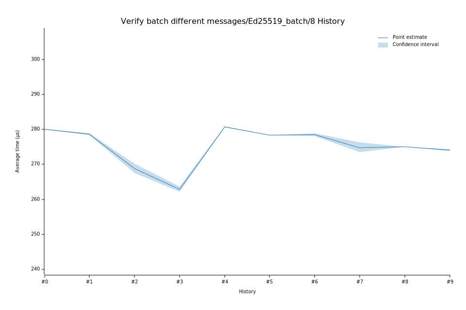

# 32023-02-08T18:57:41Z
|
Lower Bound |
Estimate |
Upper Bound |
| Value: |
262.22µs |
262.85µs |
263.66µs |
| Change in Value: |
-3.0090% |
-2.4732% |
-1.9284% |
No change in performance detected.
# 22022-12-05T08:46:06Z
|
Lower Bound |
Estimate |
Upper Bound |
| Value: |
267.49µs |
268.75µs |
270.18µs |
| Change in Value: |
-3.6350% |
-3.1572% |
-2.7028% |
No change in performance detected.
# 12022-11-14T11:58:59Z
|
Lower Bound |
Estimate |
Upper Bound |
| Value: |
278.34µs |
278.63µs |
278.92µs |
| Change in Value: |
-0.6974% |
-0.5755% |
-0.4513% |
No change in performance detected.
# 02022-11-04T13:37:18Z
|
Lower Bound |
Estimate |
Upper Bound |
| Value: |
279.99µs |
280.09µs |
280.19µs |